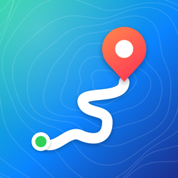

Live-Tracking
Die Strecke wächst auf der Karte mit. Geschwindigkeit, Höhe, Distanz und Dauer laufen sekundengenau mit, dazu ein Höhenprofil. Aufnahmen lassen sich pausieren und laufen auch im Hintergrund weiter.

GPS Tracker für iPhoneGPS Tracker zeichnet deine Wanderungen, Radtouren und Fahrten auf, zeigt Tempo, Höhe und Distanz live an und speichert alles als Standard-GPX, das du überall weiterverwenden kannst.
Alles, was man für eigene GPS-Aufzeichnungen braucht, ohne Konto und ohne Abo.
Die Strecke wächst auf der Karte mit. Geschwindigkeit, Höhe, Distanz und Dauer laufen sekundengenau mit, dazu ein Höhenprofil. Aufnahmen lassen sich pausieren und laufen auch im Hintergrund weiter.
Jede gespeicherte Aufzeichnung bekommt einen Namen und landet in der Liste. In der Detailansicht siehst du Karte, Kennzahlen und Höhenprofil der Tour.
Mit einem Tippen wird die Strecke als GPX 1.1 mit Koordinaten, Höhe und Zeitstempeln exportiert und lässt sich per AirDrop, Mail oder in Komoot, Strava und Co. teilen.
Wähle einen Ordner, zum Beispiel in iCloud Drive, und die App gleicht deine Strecken in beide Richtungen ab. So hast du sie auf allen Geräten und als GPX-Dateien direkt im Finder.
Aufzeichnung starten, beenden oder umschalten, per Sprache, in Kurzbefehl-Automationen oder über den Action Button. Beim Beenden wird die Strecke automatisch gespeichert.
Die Aktionen stehen ohne Einrichtung in Siri und der Kurzbefehle-App bereit.
Hey Siri, starte Aufzeichnung in GPS Tracker
Hey Siri, beende Aufzeichnung in GPS Tracker
Schalte Aufzeichnung in GPS Tracker um
Von der ersten Aufzeichnung bis zur GPX-Datei in vier Schritten.